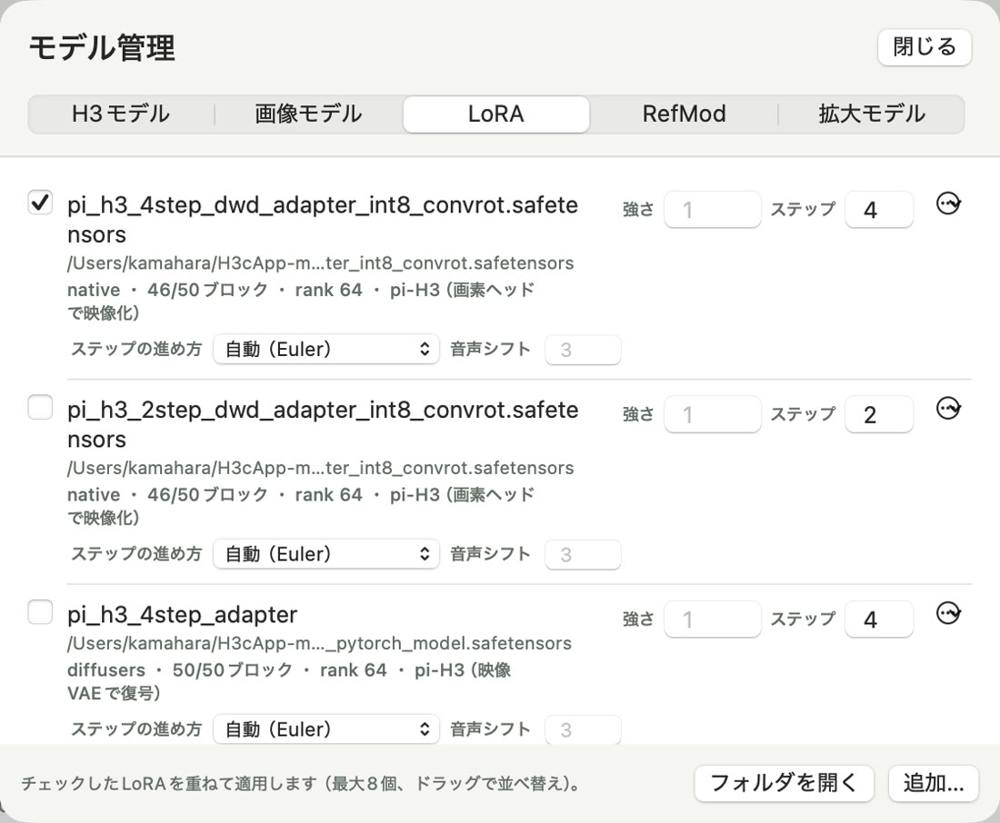

pi-H3（2・4ステップで生成する追加モデル）
pi-H3は、MiniMax H3を2ステップまたは4ステップで生成できるようにする追加モデルです。LoRAと同じ手順で登録して、オンにするだけで使えます。H3cAppはv0.12.0から対応しています。通常の20ステップに比べて、生成時間は4ステップで約5分の1、2ステップで約10分の1になります。
pi-H3とは
pi-H3は、Hansheng Chen氏らが公開しているMiniMax H3用の追加モデル（アダプタ）です。少ないステップで生成できるように蒸留したもので、2ステップ用と4ステップ用があります。
MiniMax H3は、ふつう次の順で動画をつくります。
- 文章を読み取る（テキストエンコーダ）。
- ノイズから映像と音声のもとを少しずつ仕上げる（DiT）。既定では20回くり返します。
- できた「もと」を、映像のフレームと音声に変換する（VAE）。
pi-H3は、このうち2と3を短くします。
- 2のくり返しを2回か4回にします。生成時間の大部分はここなので、効果が大きくなります。
- 3の映像の変換を、追加モデルの「画素ヘッド」に置き換えます（画素ヘッドつきの版）。映像VAEの36層のかわりに8層で映像を出すので、変換が速くなります。音声の変換は変わりません。
画素ヘッドを使わず、3は映像VAEのままにする版もあります。どちらも同じ手順で使えます。
仕上がりを見比べる
このページの映像と音声は、すべてAIで生成したものです（H3cAppで、MiniMax H3とpi-H3を使用）。3つのプロンプトを、6つの方法でそれぞれ1回ずつ生成しました。左右に並べる方法を選べます。


方法が違うと、同じシードでも別の場面になることがあります。ここで見るのは「同じ場面の細部」ではなく、それぞれの方法がどのくらい整った映像を出すかです。
使ったプロンプト
- 猫と毛糸玉：A small orange cat plays with a ball of yarn on a wooden floor in soft afternoon light. Static camera, gentle movement. Soft room ambience, no speech.
- ギターを弾く人：A street musician plays an acoustic guitar in a quiet stone plaza at dusk, warm lights in the windows behind him. Slow push-in camera. Gentle guitar melody, distant footsteps, no speech.
- 話す人：A young woman with short black hair, wearing a navy blazer, stands in a bright university hallway and speaks directly to the camera with a friendly smile, saying: "Welcome to our campus. Let me show you around." Medium close-up, static camera. Clear voice, quiet indoor ambience, no music.
どのクリップも、H3cAppで文章だけからAIで生成した動画です（672×384・5秒、シード42、M5・24GB）。pi-H3の4本は2026年11月22日に、通常の20ステップとTurbo LoRAは同じプロンプトとシードで2026年11月9日に生成したものです。ページ用に圧縮し直しているので、細かい質感は元の動画より落ちています。
音声付きで見る
pi-H3でも、映像と音声を一緒につくります。下はpi-H3の4ステップ（画素ヘッド）でAIが生成した動画そのものです（音声付き、再生ボタンを押すと音も流れます）。
pi-H3 4ステップ（画素ヘッド）・横長・中（672×384）・5秒・音声あり
時間とメモリ
| 方法 | 生成時間 | うち映像への変換 |
|---|---|---|
| 通常 20ステップ | 10分45秒 | — |
| Turbo LoRA 4ステップ | 3分02秒 | — |
| pi-H3 4ステップ（画素ヘッド） | 2分18秒 | 4秒 |
| pi-H3 2ステップ（画素ヘッド） | 1分08秒 | 4秒 |
| pi-H3 4ステップ（映像VAE） | 3分05秒 | 59秒 |
| pi-H3 2ステップ（映像VAE） | 2分04秒 | 59秒 |
- 時間：画素ヘッドつきの4ステップは、同じ4ステップのTurbo LoRAより44秒短くなりました。差は映像への変換で、映像VAEの約59秒が画素ヘッドでは約4秒になります。画素ヘッドなしの4ステップは、Turbo LoRAとほぼ同じ時間です。512×512・3秒では、通常の20ステップが206秒、画素ヘッドつきの4ステップが68秒、2ステップが37秒でした。アプリを起動して最初の生成は、15秒ほど長くなります。
- 映像への変換：画素ヘッドは、512×512・3秒（73フレーム）を約3秒で映像にしました。映像VAEは同じ条件で約38秒です。960×544・5秒（124フレーム）では画素ヘッドが7.7秒でした。
- メモリ：832×480・5秒・4ステップでは、画素ヘッドつきの版が、ノイズ除去の段階で4.7GiB、画素ヘッドの段階で2.2GiBでした。画素ヘッドなしの版は、ノイズ除去の段階で3.7GiB、映像VAEの段階で4.3GiBです。どちらも、文章を読み取る段階（約4.9GiB）が全体の最大でした（エンジン単体での計測）。
- 大きいサイズ：1344×768・5秒・4ステップ（画素ヘッドつき）は約18分で、最大はノイズ除去の段階の7.3GiBでした。
プロンプトごとの差があります。数値は目安です。画質の数値（MUSIQなど）は測っていません。
用意するもの
1. H3cApp v0.12.0以降
v0.11.0以前は、pi-H3に対応していません。
2. AdaLNが「曲線形」のMiniMax H3モデル
pi-H3は、AdaLNが「曲線形」（ComfyUIのpruned形式）のMiniMax H3モデルに重ねて使います。動作を確かめたのは、unslothの minimax_h3_fl2va_pruned-Q4_K.gguf を取り込んだモデルです（GGUFのモデルを使う）。
AdaLNが「密な形」のモデル（公式の重みなど）では確かめていません。合わないモデルでは、生成の開始時にエラーが表示されます（困ったとき）。
3. pi-H3のファイル
H3cAppはpi-H3をダウンロードしません。Hugging FaceのLakonik/pi-H3から、使うものを自分でダウンロードします。全部で4つあり、1つだけでも使えます。
| 種類 | ステップ数 | ダウンロードするファイル | 大きさ |
|---|---|---|---|
| 画素ヘッドつき | 4 | pi_h3_4step_dwd_adapter_int8_convrot.safetensors、または pi_h3_4step_dwd_adapter フォルダの diffusion_pytorch_model.safetensors | 2.2GB、または3.8GB |
| 2 | pi_h3_2step_dwd_adapter_int8_convrot.safetensors、または pi_h3_2step_dwd_adapter フォルダの diffusion_pytorch_model.safetensors | 2.2GB、または3.8GB | |
| 画素ヘッドなし | 4 | pi_h3_4step_adapter フォルダの diffusion_pytorch_model.safetensors | 0.5GB |
| 2 | pi_h3_2step_adapter フォルダの diffusion_pytorch_model.safetensors | 0.5GB |
- 画素ヘッドつきは、2つの形のどちらでも使えます。名前の最後が
_int8_convrot.safetensorsの単一ファイル（2.2GB）か、pi_h3_4step_dwd_adapter・pi_h3_2step_dwd_adapterの各フォルダにあるdiffusion_pytorch_model.safetensors（各3.8GB、v0.12.1から）です。中身は同じ追加モデルで、単一ファイルのほうはint8に量子化されています。同じシードでほぼ同じ場面になり、時間も変わりません。ダウンロードが小さい単一ファイルで足ります。 - 画素ヘッドなしは、フォルダごとダウンロードするか、フォルダの名前が分かるように保存します。ファイルの名前が2つとも
diffusion_pytorch_model.safetensorsなので、H3cAppはフォルダの名前（pi_h3_4step_adapter）で見分けて、ステップ数もそこから読み取ります。 - 配布元は、画素ヘッドつきの版をすすめています。
使い方
v0.12.0から使えます。画素ヘッドつきのフォルダの中のファイル（3.8GB）は、v0.12.1からです。

- ツールバーの「モデル管理」を開き、「LoRA」タブを選びます。
-
「追加…」で、ダウンロードしたファイルを選びます。画素ヘッドなしの版は、フォルダの中の
diffusion_pytorch_model.safetensorsを選びます。「ダウンロード」や「書類」のフォルダにあるファイルを選ぶと、LoRAフォルダへ移すかどうかを聞かれます。移した場合、画素ヘッドなしの版はpi_h3_4step_adapter.safetensorsのように、元のフォルダの名前になります。 - 行の表示を確かめます。「pi-H3（画素ヘッドで映像化）」または「pi-H3（映像VAEで復号）」と出ていれば、pi-H3として読み込めています。「ステップ」欄に4か2が入っていることも確かめます。入っていなければ、そのファイル用の数（4か2）を入力します。
- 使う1つをオンにします。行のチェックボックスか、「詳細設定」の「追加モデル」タブの「追加モデル（LoRA）」でオンにします。「生成ステップ数」が、そのファイル用の数（4か2）に切り替わります。「強さ」は空欄（1）のままにします。
- いつもどおり生成します。プロンプト、サイズ、長さの決め方は変わりません。進み具合は「ノイズ除去 2/4 ステップ」「映像への変換」のように表示されます。
- 通常の生成に戻すときは、オフにします。ステップ数は元の値に戻り、速度などの設定も元どおり使われます。
オンの間に変わること
- ステップ数は、そのファイル用の数だけです。4ステップ用なら4、2ステップ用なら2です。ほかの数にすると、生成ボタンの上に「追加モデル「…」（pi-H3）は4ステップ用です。詳細設定の「生成ステップ数」を4にしてください」と表示され、生成は始まりません。
- 「速度」は使われません。「高速」「最速」を選んでいても、毎ステップを省略なしで計算します。pi-H3はステップが少ないので、ステップ間の使い回しができません。「最速」が使うトークンの省略は、画素ヘッドの絵を崩すことも確かめています。
- 「ノイズ除去の再利用」は1になります。
- 設定値は消えません。「速度」と「ノイズ除去の再利用」で選んでいた値は残り、pi-H3をオフにすると元どおり使われます。
- 動画の記録には、実際に動いた値が残ります。「使用した設定…」と動画の記録（
.json）には、「標準」「reuse 1」と入ります。 - 所要時間の見積もりは、画素ヘッドを使う生成の実績から別に計算します。
どれを選ぶか
| やりたいこと | 選ぶもの |
|---|---|
| まず試したい | 画素ヘッドつきの4ステップ |
| いちばん短い時間でつくりたい | 画素ヘッドつきの2ステップ。4ステップより細部が甘くなります。 |
| ダウンロードを小さくしたい | 画素ヘッドなし（0.5GB）。映像の変換は映像VAEのままなので、そのぶん時間がかかります。 |
| 通常の生成と同じ映像VAEで仕上げたい | 画素ヘッドなしの4ステップ |
- 場面を決めるのは、主にステップ数です。同じプロンプトとシードなら、同じステップ数の画素ヘッドつきと画素ヘッドなしは、ほぼ同じ場面になりました。2ステップ用と4ステップ用では、別の場面になります。
- 画素ヘッドつきの版の細部は、映像VAEで仕上げた場合より、等倍で見るとわずかに柔らかくなります。
- 1つだけオンにします。2つのpi-H3を同時にオンにすると、生成の開始時にエラーになります。Turbo LoRAなど、ほかの少ないステップ用のLoRAとの重ね合わせは確かめていません。
ほかの機能との組み合わせ
| 機能 | pi-H3と一緒に |
|---|---|
| 文章から | 使えます。 |
| 最初・最後の画像 | 使えます。できた動画の最初と最後が、選んだ画像になります。 |
| 参照画像・動画・音声 | 参照画像1枚で動かして、絵は崩れませんでした。配布元が対応としているのは、文章・最初の画像・最後の画像です。 |
| この動画の続きを作る | 使えます。引き継ぐ部分（最後の22コマ）も画素ヘッドが描き直すので、元の動画とまったく同じ絵にはなりません。 |
| 途中の様子を表示 | 使えます。 |
| 計算方式 | 「高速（int8キャッシュ）」「省メモリ（SSDストリーミング）」「常駐」のどれでも動きました。512×512・3秒・4ステップ（画素ヘッドつき）で、順に68秒、107秒、290秒です。常駐は、メモリを最大21.4GiB使いました（24GBのM5）。 |
| 速度（高速・最速）、ノイズ除去の再利用 | 使われません（オンの間に変わること）。 |
| 注意の計算の「高速（int8）」（以前の高速モード）、層数の変更 | エンジン単体で1回ずつ動かして、絵は崩れませんでした。アプリでは確かめていません。 |
| 注意の計算の「Sol-Attn（疎）」（試験的） | 2ステップ（画素ヘッドつき）・864×480・5秒で、生成全体が約137秒から、約101秒（やや速い（0.5））、約95秒（速い（1.0））になりました。メモリは約1GB増えました。同じシードでも、構図と音声は「標準」と変わります（M5・24GB、各1回。注意の計算）。 |
| 2倍に拡大 | 確かめていません。 |
| HyperFlow H3 Flash、静止画 | 使えません。pi-H3は通常のMiniMax H3の動画用です。 |
困ったとき
- 「追加モデル「…」（pi-H3）は4ステップ用です」と出て生成できない
- 「詳細設定」の「基本」タブの「生成ステップ数」を、表示された数にします。2ステップ用のファイルなのに4ステップ用と出る場合は、「モデル管理」のその行の「ステップ」欄を2に直します。
- 「追加モデル「…」（pi-H3）は2または4ステップで生成します」と出る
- ファイル名からステップ数が読み取れなかったときの表示です。「生成ステップ数」を2か4にします。「モデル管理」の「ステップ」欄にそのファイル用の数を入れておくと、次からは自動で切り替わります。
- 生成の開始直後に「a pi-H3 adapter needs a curve-form ("pruned", rank 8) MiniMax H3 checkpoint」と出る
- 使用中のMiniMax H3モデルのAdaLNが「曲線形」ではありません。prunedのGGUFから取り込んだモデルに切り替えます（用意するもの）。
- v0.12.0で、一覧に「MiniMax-H3用として読み込めません: /Users/…」と出る（理由の後半が切れて見えない）
pi_h3_4step_dwd_adapter・pi_h3_2step_dwd_adapterフォルダの中のファイルを選んでいます。v0.12.0はこの形を読めません。v0.12.1に更新するか、pi_h3_4step_dwd_adapter_int8_convrot.safetensorsを使います。v0.12.1からは、読み込めないときの理由が最後まで表示されます。- 「only one pi-H3 adapter can be applied at a time」と出る
- pi-H3を2つオンにしています。1つだけにします。
- 一覧に「diffusion_pytorch_model.safetensors」や「LoRA」という名前で出て、ステップ数が入らない
- 画素ヘッドなしの版が、フォルダの名前から中身が分からない場所に置かれています。「ステップ」欄に4か2を入力するか、ファイルを
pi_h3_4step_adapterという名前のフォルダに入れて登録し直します。 - 画素ヘッドつきの2ステップで、絵が甘い
- 4ステップ用に切り替えるか、画素ヘッドなしの版を試します。
APIから使う
アプリのAPI（POST /api/generate）では、loras に一覧の名前を、steps にそのファイル用のステップ数を入れます。名前は GET /api/loras で分かります。
{
"prompt": "A cat playing with a ball of yarn.",
"size_profile": "square-medium",
"seconds": 3,
"loras": ["pi_h3_4step_dwd_adapter_int8_convrot.safetensors"],
"steps": 4
}stepsを省くと、そのファイル用のステップ数になります。- そのファイル用でないステップ数には、生成を始める前に理由付きの
409を返します。 speed_modeとreuseは使われません。動画の記録にはqualityとreuse 1が残ります。- Sol-Attn（疎）を使うときは、
"sol_attention": trueとsol_tau（0.5か1.0）を加えます（M5の対応環境のみ）。
APIの全体はAPIの説明にあります。
確かめた範囲
- 確かめたMac：M5・24GBの1台です。M1〜M4では動かしていません。M5以外では、画素ヘッドの計算がint8ではなくF32になります（M5でその経路に切り替えて動かしました。int8の結果との差は46dBです）。
- 確かめたこと：4つのファイルそれぞれでの生成（画素ヘッドつきは、単一ファイルとフォルダの中のファイルの両方）、最初の画像、最初と最後の画像、参照画像、続き、途中の様子の表示、3つの計算方式、960×544・5秒と1344×768・5秒、ステップ数が合わないときに生成の前に断ること。できた動画は、コマを並べて目で確かめました。
- 画素ヘッドの計算：配布元の説明をもとに別に書いた実装（numpy）と比べて、F32では255段階のうち最大1の差、M5が使うint8では46dBでした。
- 確かめていないこと：AdaLNが「密な形」のモデル、メモリ16GB以下のMac、2倍の拡大、音声の聞き比べ、画質の数値での比較。
- 記録：オンにした追加モデルの名前は、動画の記録とプロジェクトに残ります。
重みとライセンス
- pi-H3の重みは、Hansheng Chen氏らがHugging Faceで公開しています。解説は配布元のブログと論文「Decoding Without a Decoder」にあります。
- 配布元は、pi-H3をMiniMax H3の派生モデル（Model Derivative）とし、MiniMax H3 Community Licenseが適用されるとしています。MiniMaxの公式のモデルではありません（Powered by MiniMax H3）。
- H3cAppには重みを含めていません。ダウンロードの前に、配布元のライセンスと注意書きを確認してください。どの条件が自分の利用に当てはまるかは、利用者が判断してください。
- H3cAppのpi-H3対応は、公開されている重み・説明・コードを読んで、独自に書いたものです。配布元のコードは実行していません。
詳しくはライセンスをご覧ください。追加モデル全般の使い方は追加モデル（LoRA）を使うにあります。